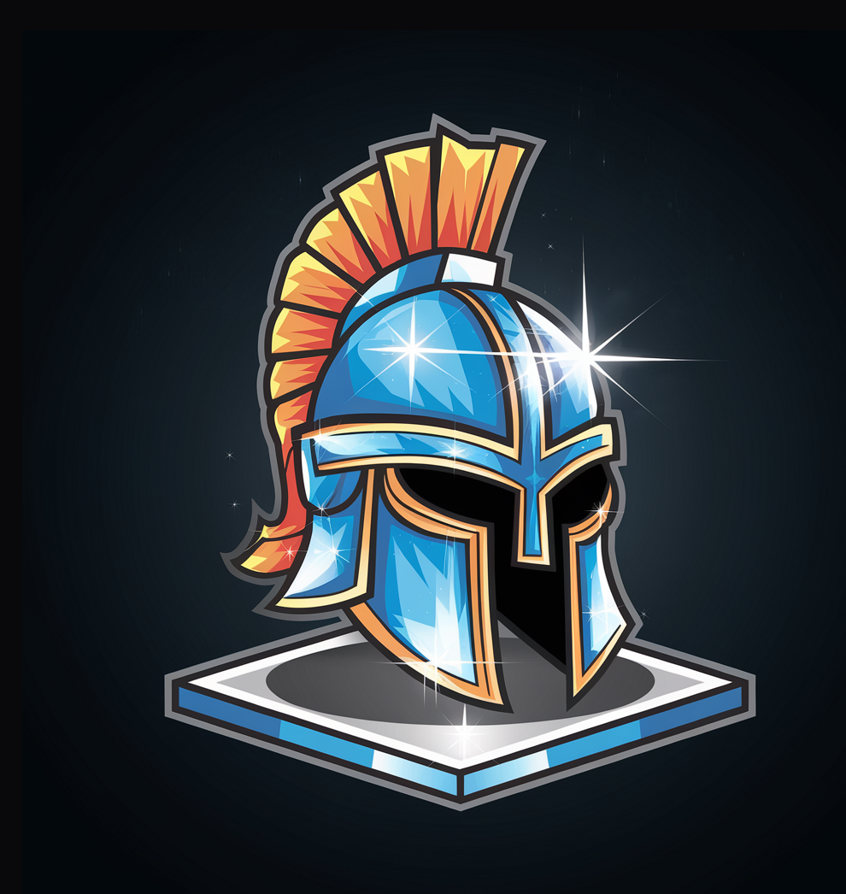
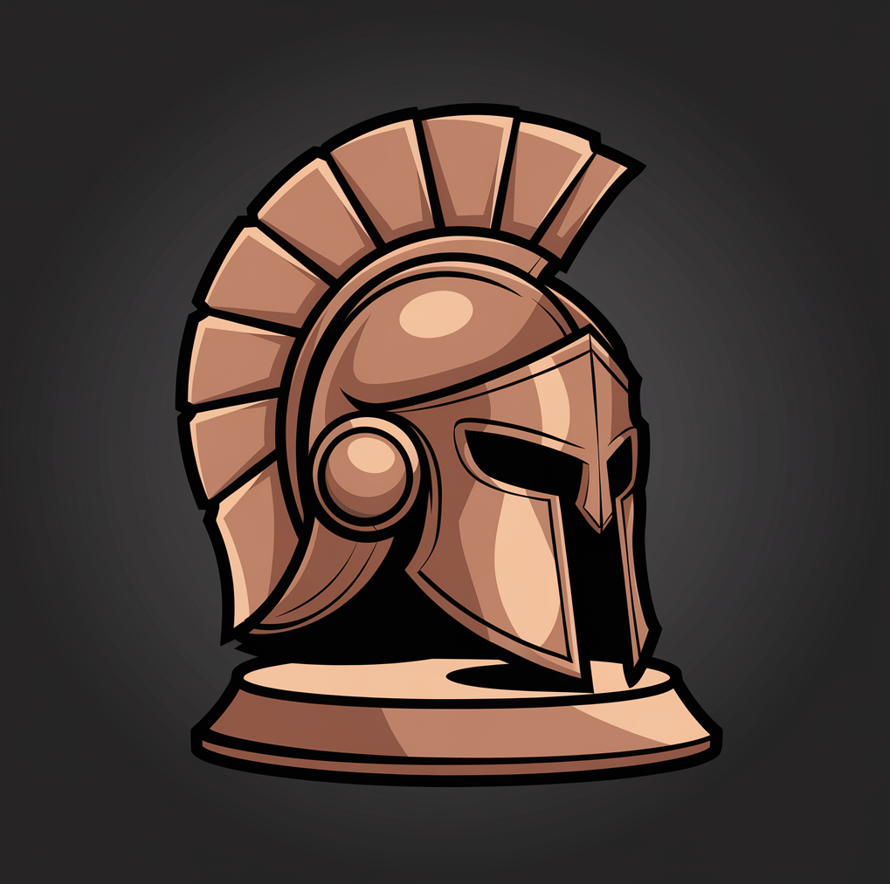

About Lift Ascend
Lift Ascend is a strength calculator and progress tracker for powerlifters. It shows where your squat, bench press and deadlift stand against lifters of your gender, weight class and age group.
Getting started
You can use the calculator on the home page without an account. Enter your age, bodyweight, gender and your best three lifts to see your percentile for each lift, your total and your DOTS score.
Create an account to save your lifts, add friends and compare on a leaderboard. An account needs only a username and a password. Lift Ascend does not ask for your email address.
Ranks
Your overall rank comes from the average of your three lift percentiles.
-

Diamond80th percentile and above -
 Gold65th to 79th percentile
Gold65th to 79th percentile -
 Silver45th to 64th percentile
Silver45th to 64th percentile -

BronzeBelow the 45th percentile
Friends leaderboard
- Add friends. Search for a lifter by name, open their profile and choose Add friend.
- Pick what to compare. Sort the leaderboard by total, DOTS, squat, bench or deadlift.
- See the standings. Each friend's latest saved lifts and rank appear in order.
Where the data comes from
Percentiles are built from competition results published by the OpenPowerlifting project, grouped by gender, weight class and age group. Your lifts are placed between the recorded percentile points with smooth interpolation, so results between data points are estimates.
You can download a copy of the source data from OpenPowerlifting's data page.